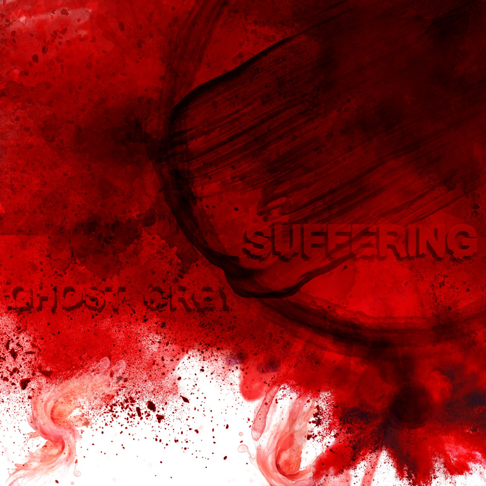
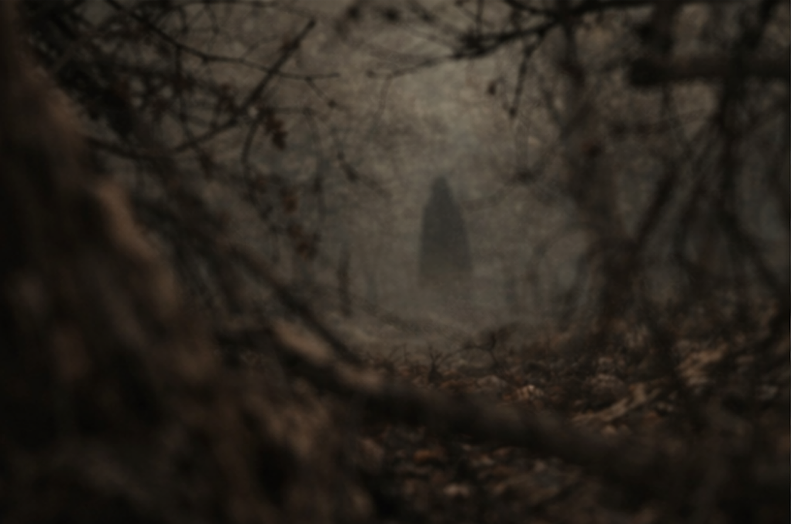

I · Salt
Salt
The preservation wound. What is kept in the body so it remembers what entered it.
Ghost Orgy is what crossed back. Not the Orchard. Not the women still moving through it. Not the part of the room that keeps changing after the sound stops. Only this: signal, breath, pressure, witness.
Two albums. Two wounds. One signal the Orchard let through.
The preservation wound. What is kept in the body so it remembers what entered it.

The endurance wound. What the body does once the signal will not leave the room.
Not explanations. Pressure marks. Sentences that keep surfacing in files written by people who should not share language.


Nine failures of the self with bodies grown around them. They do not arrive evenly. They do not keep still long enough to become profiles. They surface the way dread surfaces: by changing the room around them first.
The hallway arrives after the footsteps. The mirror refuses to end where the wall says it should.
Wanting so total it eats the name of the one doing the wanting.
Not hunger for food. Hunger for significance. A mouth opening under meaning itself.
Every object weighed against the soul nearest to it. Only the hunger appreciates.
Fire that chooses flesh without asking the room for permission.
Faith forgets its own words in her presence. Prayer becomes fuel instead of defense.
The body copies the room. The room copies the wound. Both insist they were first.
A face learned too well. A voice held one beat too long after the owner is gone.
Love reads as threat. Mercy reads as permission. Meaning turns its knife inward.